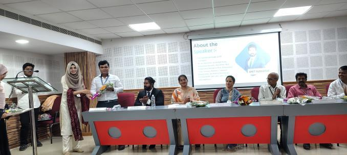
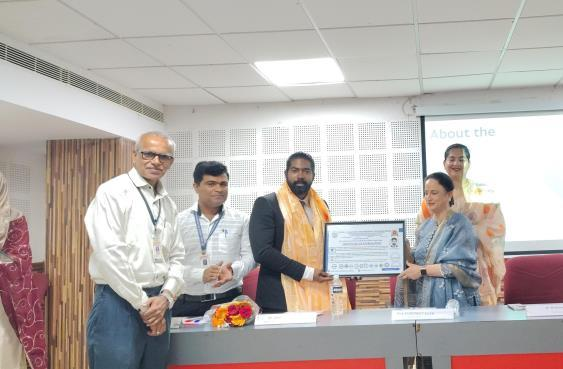
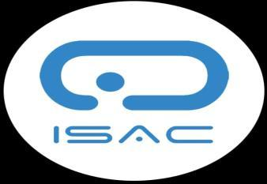
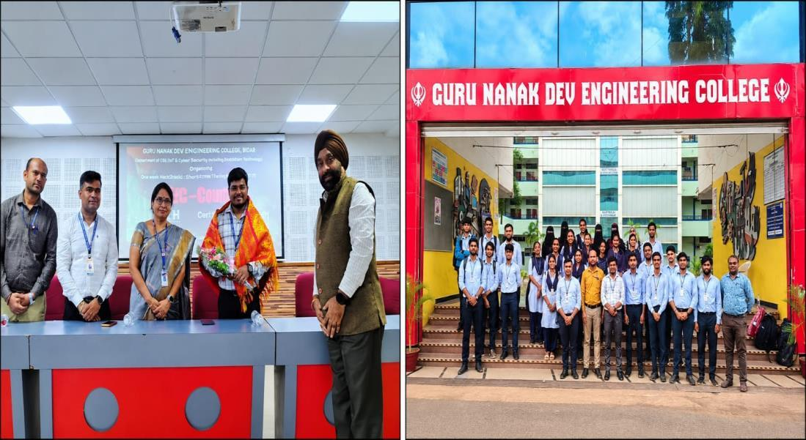
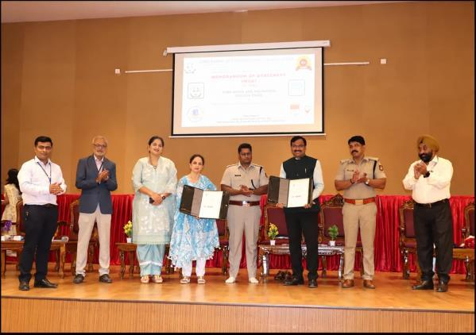
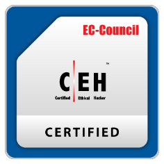
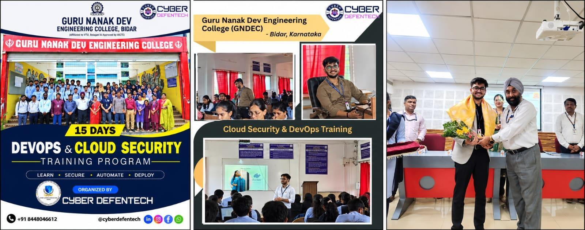
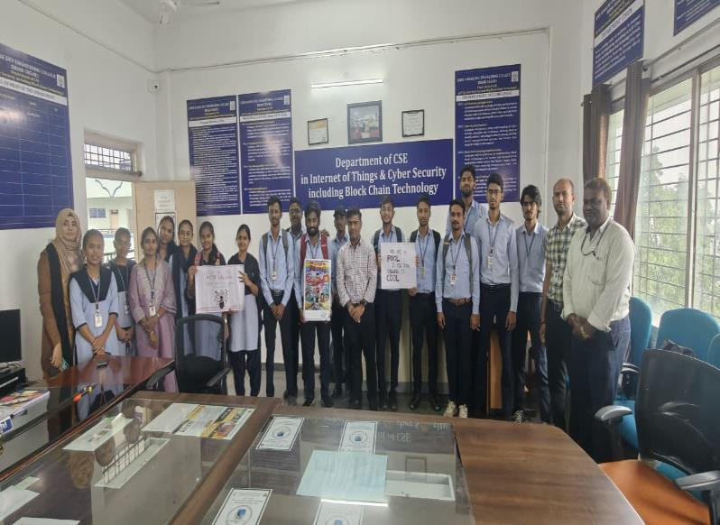
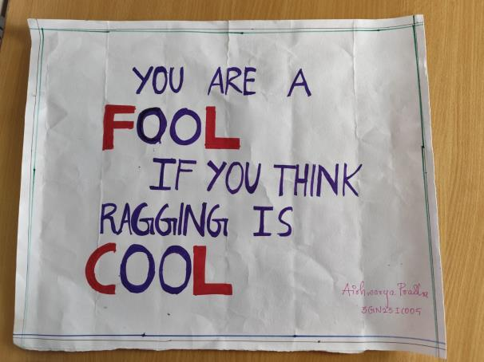
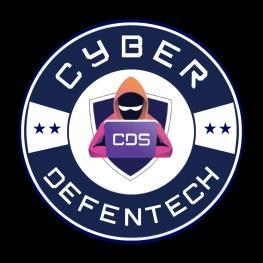

Filter Department Glimpses & Events
1. Workshop on Cybersecurity and Its Career Opportunities
One of the first events organized by the Department of CSE (IoT, Cybersecurity including Blockchain Technology) in association with the Cyber Samurai Association was the event on “Cybersecurity and Its Career Opportunities.”
As this was the first batch of the department, the event marked an important beginning for the department’s professional and technical activities. During the event, the Department Association Logo was inaugurated, symbolizing the establishment and identity of the department association.
The event also featured an MoU Signing Ceremony between Guru Nanak Dev Engineering College, Bidar, including the Department of CSE (IoT, Cybersecurity including Blockchain Technology), and MIBIZ Cyber Forensics. The collaboration marked an important step toward strengthening industry–academia interaction and providing students with exposure to cybersecurity and related professional opportunities.


2. Memorandum of Agreement Signing with ISAC
The second major event organized by the Department of CSE (IoT, Cybersecurity including Blockchain Technology), through the Cyber Samurai Association, was the signing of a Memorandum of Agreement between Guru Nanak Dev Engineering College, Bidar, and ISAC (Information Sharing and Analysis Center).
The event represented an important initiative toward collaboration, knowledge sharing, and strengthening cybersecurity awareness and learning opportunities for students. The association provided a platform for students to engage with cybersecurity-focused activities and industry-oriented initiatives.


3. EC-Council Certified Ethical Hacker (CEH v13) Certification Program
One of the prestigious highlights of the department was the EC-Council Certified Ethical Hacker Version 13 (CEH v13) Certification Program. The program was conducted as a Short-Term Training Program (STTP) for 13 days in collaboration with Guru Nanak Dev Engineering College, Bidar, and EC-Council.
The program provided students with structured training in ethical hacking and cybersecurity concepts, followed by the CEH certification examination.
Around 30 students from the Department of CSE (IoT, Cybersecurity including Blockchain Technology) successfully qualified in the CEH examination and earned the Certified Ethical Hacker credential. This achievement reflects the department’s focus on industry-recognized cybersecurity skills and professional certification.


4. Anti-Ragging Day / Anti-Ragging Awareness Event
The department also participated in an Anti-Ragging awareness initiative aimed at promoting a safe, respectful, and supportive campus environment.
The event focused on creating awareness among students about the prevention of ragging and the importance of maintaining a positive and inclusive atmosphere across the college campus. Through this initiative, students were encouraged to understand their responsibilities and contribute toward a ragging-free campus.


5. Cybersecurity Center of Excellence with Cyber DefenTech
A significant milestone in the department’s journey was the establishment of a Cybersecurity Center of Excellence (CoE) through a collaboration between the Department of CSE (IoT, Cybersecurity including Blockchain Technology), Guru Nanak Dev Engineering College, Bidar, and Cyber DefenTech, New Delhi.
The Center of Excellence represents a strong industry–academia collaboration focused on strengthening cybersecurity education, practical learning, innovation, and industry exposure. It provides a foundation for students to develop practical cybersecurity skills and engage with emerging technologies and real-world cybersecurity practices.
The establishment of the Cybersecurity Center of Excellence stands as one of the key achievements and important glimpses of the department.

